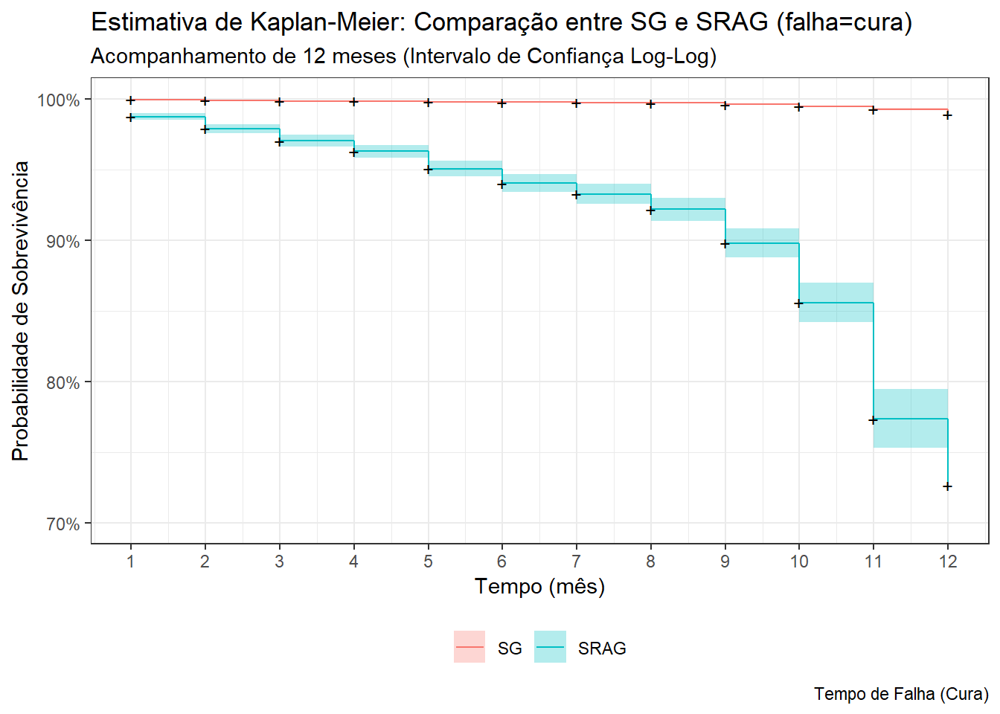
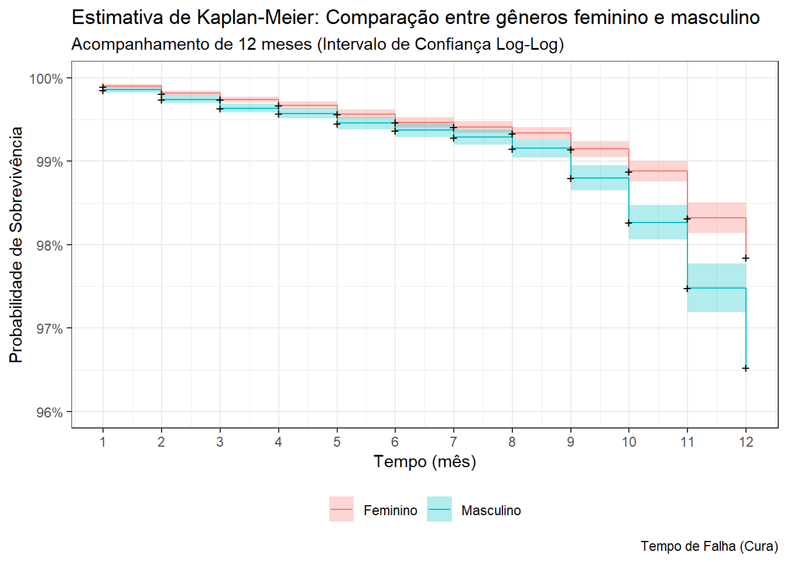
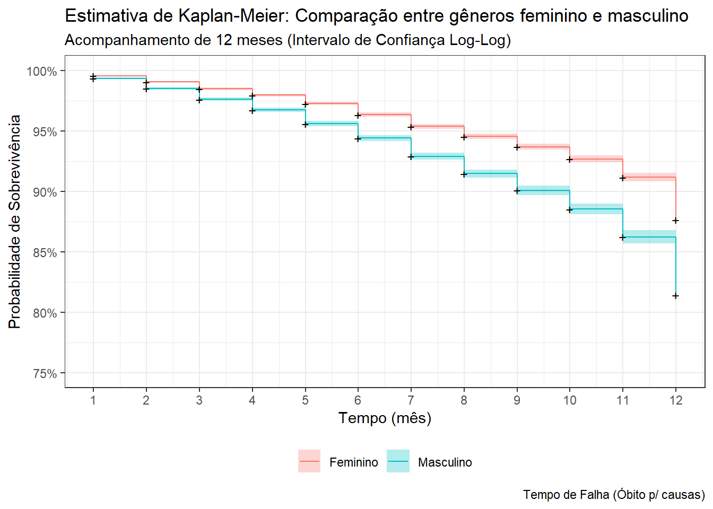
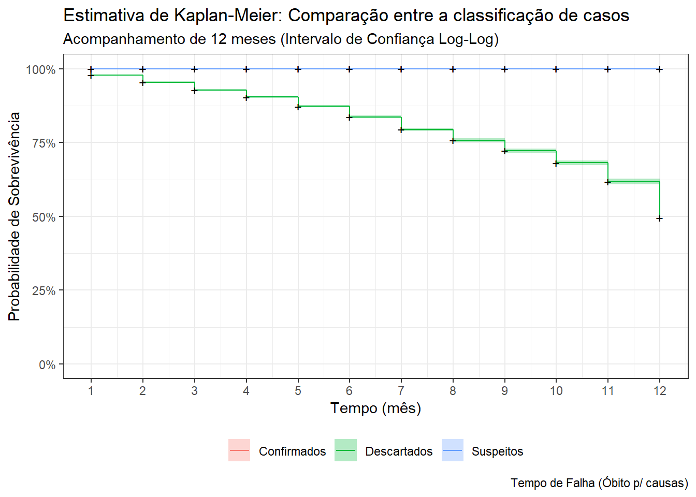

sexo racacor dt_sin_pri forma_doenca classificacao
1 Feminino Sem preenchimento 2023-02-15 SG Suspeitos
2 Feminino Branca 2023-03-08 SG Suspeitos
3 Masculino Branca 2023-01-01 SG Confirmados
evolucao
1 Em investigação
2 Em investigação
3 Em investigação2 Trabalhando o banco de dados
O banco de dados ‘esus.sivep.covid19bh’ do ano de 2023 possui um total de 132.804 observações e 11 variáveis. No entanto as colunas que teram enfoque são apenas 6 - sexo, racacor, dt_sin_pri, forma_doenca, classificacao e evolucao.
Após filtrar foi identificado apenas uma observação como ‘na’ sendo descartada, o total de observações passa a ser de 132.803.
Para trabalha com o tempo para uma análise de sobrevivência é necessário identificar a variável em que se tem informação sobre os sintomas das formas da doença, principalmente em relação ao início de ocorrência. Pela natureza das datas, não é possível a priori, trabalhar o tempo desta maneira, mas é possível transformar para uma forma em que seja estimado os tempos de sobrevivência. Com o pacote ‘lubridate’ se pode captar numericamente os dias e agrupar o número de ocorrência de sintomas primários nos 12 meses.
tempo
1 2 3 4 5 6 7 8 9 10 11 12
14605 13605 15874 13320 16275 11533 8386 5848 6466 8644 11834 6413 Para o status, baseado na natureza e organização dos dados trabalhar com a variável ‘evolucao’ se torna um desafio entender, a princípio para identificar e estimar as falhas como evento de interesse. Por isso, eu criei 3 tipos de status, tomando como falhas: cura, óbito e óbito por outras causas. Os casos tidos como ‘Em investigação’ e ‘Em monitoramento’, seram tratados como censura, uma vez que o paciente não apresentou os eventos de interesse apresentados.
Há também a variável ‘classificacao’, sendo interessante para identificar a quantidade de casos confirmados e estimar as falhas de interesse, bem como identificar os casos suspeitos e descartados para quantificar e entender quantos desses foram apresentaram os eventos de interesse e se existe conflito entre os eventos de ‘óbito’ e ‘óbitos por outras causas’.
Assim o banco de dados estudado fica com 9 variáveis para serem trabalhadas.
sexo racacor dt_sin_pri forma_doenca classificacao
1 Feminino Sem preenchimento 2023-02-15 SG Suspeitos
2 Feminino Branca 2023-03-08 SG Suspeitos
3 Masculino Branca 2023-01-01 SG Confirmados
evolucao status_1 status_2 status_3
1 Em investigação 0 0 0
2 Em investigação 0 0 0
3 Em investigação 0 0 02.1 Dinâmica das doenças SG vs. SRAG
O que queremos investigar: os tempo de vida de pacientes notificados com suspeita de Síndrome Gripal - SG e Sindrome Respiratória Agúda Grave - SRAG.
Temos algumas linhas de investigação:
Entender pela cura;
Entender pelos óbitos;
Entender quantos desses casos foram confirmados.
Quantos desses casos foram descartados.
Segundo as informações do próprio repositório, o SG é por covid19.
2.1.1 Tempo até a cura: comportamento entre gêneros e classificação de casos
Pela tabela gerada pelo pacote ‘survival’ do R, se pode percerbe que existe uma estabilidade na probabilidade de sobrevivência principalmente no grupo de pessoas com a forma da doença Síndrome Gripal. Quer dizer que há mais demora até um paciente ser curado. No entanto, apesar de haver muitas notificações de casos de Síndrome Gripal, existe poucos eventos em que esses paciente de fato se curaram.
Para os casos de paciente com Síndrome Respiratória Agúda Grave, houve consideráveis observações de pessoas que se curaram da doença, com probabilidades de não sobrevivência de praticamente 73% no 12 mês do ano de 2023, indicando que apesar das notificações, os pacientes conseguiram se curar.
Em ambos os grupos, podemos observar que houve muitas notificações, onde ao passar dos meses essa notificações foram oscilando e diminuindo drasticamente, principalmente no grupo de pessoas com SRAG. Isto indica que houve censuras, seja por óbitos devido as doenças, óbitos por outro fatores ou mesmo pela perda de acompanhamento desses paciente.
Call: survfit(formula = Surv(tempo, status_1) ~ forma_doenca, data = df_fit)
forma_doenca=SG
time n.risk n.event survival std.err lower 95% CI upper 95% CI
1 125340 63 0.999 6.33e-05 0.999 1.000
2 111532 57 0.999 9.26e-05 0.999 0.999
3 98755 39 0.999 1.12e-04 0.998 0.999
4 83688 20 0.998 1.24e-04 0.998 0.999
5 71018 28 0.998 1.45e-04 0.998 0.998
6 55498 16 0.998 1.61e-04 0.997 0.998
7 44641 8 0.997 1.73e-04 0.997 0.998
8 36895 11 0.997 1.95e-04 0.997 0.998
9 31539 37 0.996 2.74e-04 0.995 0.997
10 25529 35 0.995 3.58e-04 0.994 0.995
11 17353 33 0.993 4.85e-04 0.992 0.994
12 6051 21 0.989 8.93e-04 0.988 0.991
forma_doenca=SRAG
time n.risk n.event survival std.err lower 95% CI upper 95% CI
1 7463 93 0.988 0.00128 0.985 0.990
2 6666 58 0.979 0.00170 0.976 0.982
3 5838 51 0.970 0.00206 0.966 0.974
4 5031 39 0.963 0.00237 0.958 0.968
5 4381 56 0.951 0.00286 0.945 0.956
6 3626 39 0.940 0.00326 0.934 0.947
7 2950 24 0.933 0.00359 0.926 0.940
8 2310 27 0.922 0.00411 0.914 0.930
9 1818 47 0.898 0.00528 0.888 0.908
10 1362 64 0.856 0.00720 0.842 0.870
11 894 86 0.773 0.01065 0.753 0.795
12 362 22 0.726 0.01395 0.700 0.754Gráficamente podemos observa melhor a curva de Kaplan-Meier:


Call: survfit(formula = Surv(tempo, status_1) ~ classificacao, data = df_fit)
classificacao=Confirmados
time n.risk n.event survival std.err lower 95% CI upper 95% CI
1 12061 124 0.990 0.000919 0.988 0.992
2 10818 74 0.983 0.001203 0.981 0.985
3 10404 60 0.977 0.001401 0.975 0.980
4 9567 43 0.973 0.001547 0.970 0.976
5 8665 62 0.966 0.001770 0.962 0.969
6 7527 42 0.961 0.001946 0.957 0.964
7 7142 25 0.957 0.002052 0.953 0.961
8 6857 30 0.953 0.002181 0.949 0.957
9 6381 67 0.943 0.002477 0.938 0.948
10 5132 81 0.928 0.002939 0.922 0.934
11 2750 99 0.895 0.004347 0.886 0.903
12 744 29 0.860 0.007600 0.845 0.875
classificacao=Descartados
time n.risk n.event survival std.err lower 95% CI upper 95% CI
1 32795 32 0.999 0.000172 0.999 0.999
2 30170 41 0.998 0.000273 0.997 0.998
3 27301 28 0.997 0.000334 0.996 0.997
4 23437 16 0.996 0.000375 0.995 0.997
5 19370 22 0.995 0.000445 0.994 0.996
6 15052 13 0.994 0.000505 0.993 0.995
7 11597 7 0.993 0.000553 0.992 0.994
8 9518 8 0.993 0.000626 0.991 0.994
9 8021 16 0.991 0.000797 0.989 0.992
10 6160 18 0.988 0.001047 0.986 0.990
11 3903 20 0.983 0.001536 0.980 0.986
12 1468 14 0.973 0.002920 0.968 0.979
classificacao=Suspeitos
time n.risk n.event survival std.err lower 95% CI upper 95% CI
3 66888 2 1 2.11e-05 1 1
9 18955 1 1 5.68e-05 1 1
2.1.2 Tempo até o óbito: comportamento entre gêneros e classificação de casos
Call: survfit(formula = Surv(tempo, status_2) ~ forma_doenca, data = df_fit)
forma_doenca=SG
time n.risk n.event survival std.err lower 95% CI upper 95% CI
forma_doenca=SRAG
time n.risk n.event survival std.err lower 95% CI upper 95% CI
1 7463 20 0.997 0.000598 0.996 0.998
2 6666 8 0.996 0.000732 0.995 0.998
3 5838 11 0.994 0.000924 0.992 0.996
4 5031 12 0.992 0.001148 0.990 0.994
5 4381 17 0.988 0.001475 0.985 0.991
6 3626 6 0.986 0.001616 0.983 0.990
7 2950 9 0.983 0.001897 0.980 0.987
8 2310 3 0.982 0.002033 0.978 0.986
9 1818 10 0.977 0.002644 0.972 0.982
10 1362 22 0.961 0.004230 0.953 0.969
11 894 29 0.930 0.007012 0.916 0.944
12 362 12 0.899 0.011068 0.878 0.921

Call: survfit(formula = Surv(tempo, status_2) ~ classificacao, data = df_fit)
classificacao=Confirmados
time n.risk n.event survival std.err lower 95% CI upper 95% CI
1 12061 20 0.998 0.000370 0.998 0.999
2 10818 8 0.998 0.000453 0.997 0.998
3 10404 11 0.997 0.000553 0.995 0.998
4 9567 12 0.995 0.000660 0.994 0.997
5 8665 17 0.993 0.000811 0.992 0.995
6 7527 6 0.993 0.000872 0.991 0.994
7 7142 9 0.991 0.000966 0.989 0.993
8 6857 3 0.991 0.000997 0.989 0.993
9 6381 10 0.989 0.001110 0.987 0.991
10 5132 22 0.985 0.001427 0.982 0.988
11 2750 29 0.975 0.002382 0.970 0.979
12 744 12 0.959 0.005075 0.949 0.969
classificacao=Descartados
time n.risk n.event survival std.err lower 95% CI upper 95% CI
classificacao=Suspeitos
time n.risk n.event survival std.err lower 95% CI upper 95% CI
2.1.3 Tempo até oóbito por outras causas: comportamento entre gêneros e classificação de casos
Call: survfit(formula = Surv(tempo, status_3) ~ forma_doenca, data = df_fit)
forma_doenca=SG
time n.risk n.event survival std.err lower 95% CI upper 95% CI
forma_doenca=SRAG
time n.risk n.event survival std.err lower 95% CI upper 95% CI
1 7463 682 0.9086 0.00334 0.9021 0.9152
2 6666 758 0.8053 0.00461 0.7963 0.8144
3 5838 745 0.7025 0.00534 0.6921 0.7131
4 5031 598 0.6190 0.00569 0.6080 0.6303
5 4381 675 0.5236 0.00588 0.5122 0.5353
6 3626 623 0.4337 0.00587 0.4223 0.4453
7 2950 587 0.3474 0.00568 0.3364 0.3587
8 2310 441 0.2811 0.00540 0.2707 0.2919
9 1818 374 0.2232 0.00505 0.2136 0.2334
10 1362 352 0.1655 0.00459 0.1568 0.1748
11 894 365 0.0980 0.00384 0.0907 0.1058
12 362 290 0.0195 0.00219 0.0156 0.0243

Call: survfit(formula = Surv(tempo, status_3) ~ classificacao, data = df_fit)
classificacao=Confirmados
time n.risk n.event survival std.err lower 95% CI upper 95% CI
classificacao=Descartados
time n.risk n.event survival std.err lower 95% CI upper 95% CI
1 32795 682 0.979 0.000788 0.978 0.981
2 30170 758 0.955 0.001170 0.952 0.957
3 27301 745 0.929 0.001477 0.926 0.931
4 23437 598 0.905 0.001728 0.901 0.908
5 19370 675 0.873 0.002050 0.869 0.877
6 15052 623 0.837 0.002423 0.832 0.842
7 11597 587 0.795 0.002863 0.789 0.800
8 9518 441 0.758 0.003223 0.752 0.764
9 8021 374 0.723 0.003553 0.716 0.730
10 6160 352 0.681 0.003974 0.674 0.689
11 3903 365 0.618 0.004802 0.608 0.627
12 1468 290 0.496 0.007486 0.481 0.511
classificacao=Suspeitos
time n.risk n.event survival std.err lower 95% CI upper 95% CI
2.1.4 Hipótese testadas para o estimador Kaplan-Meier pela teste Logrank.
2.1.4.1 Hipótese p/ cura
SG vs SRAG
\(H_{0}\): A probabilidade de cura é igual entre os pacientes com Síndrome Gripal (SG) e Síndrome Respiratória Aguda Grave (SRAG) ao longo de 1 ano de acompanhamento.
\(H_{1}\): A probabilidade de cura é diferente em pelo menos um dos pacientes com Síndrome Gripal (SG) e Síndrome Respiratória Aguda Grave (SRAG) em algum ponto de tempo ao longo de 1 ano de acompanhamento.
Call:
survdiff(formula = Surv(tempo, status_1) ~ forma_doenca, data = df_fit,
rho = 0)
N Observed Expected (O-E)^2/E (O-E)^2/V
forma_doenca=SG 125340 368 920.1 331 5995
forma_doenca=SRAG 7463 606 53.9 5649 5995
Chisq= 5995 on 1 degrees of freedom, p= <2e-16 Conclusão: p < 0.05, logo se rejeita \(H_{0}\), portanto a probabilidade de cura é diferente em pelo menos um dos paciente com SG e SRAG em algum ponto de tempo ao longo de 1 ano de acompanhamente.
Se nota que houve altas expectativa para notificações de pessoas curadas da Síndrome Gripal, mas ocorreu o oposto: de 921 esperadas, apenas 388 se curaram. Enquanto que se esperava 54 pessoas curadas da Síndrome Respiratória Agúda Grave, 606 se curaram da SRAG.
Classificados: confirmados, suspeito e descartados
\(H_{0}\): A probabilidade de cura é igual entre os pacientes classificados como casos (confirmados, suspeito e descartados) ao longo de 1 ano de acompanhamento.
\(H_{1}\): A probabilidade de cura é diferente em pelo menos um dos pacientes classificados como casos (confirmados, suspeitos e descartados) em algum ponto de tempo ao longo de 1 ano de acompanhamento.
Call:
survdiff(formula = Surv(tempo, status_1) ~ classificacao, data = df_fit,
rho = 0)
N Observed Expected (O-E)^2/E (O-E)^2/V
classificacao=Confirmados 12061 736 126 2.95e+03 3.44e+03
classificacao=Descartados 32795 235 238 3.14e-02 4.17e-02
classificacao=Suspeitos 87947 3 610 6.04e+02 1.63e+03
Chisq= 3610 on 2 degrees of freedom, p= <2e-16 Conclusão: p < 0.05, logo se rejeita \(H_{0}\), portanto a probabilidade de cura é diferente em pelo menos um dos pacientes classificados como casos (confirmados, suspeito e descartados) em algum ponto de tempo ao longo de 1 ano de acompanhamente.
Podemos observar que que entre os grupos classificados dos casos, era esperado 126 casos confirmados, 238 descartados e 610 suspeitos. O que se observou foi que houve mais de 50% de casos confirmados, enquantos que houve casos descartados que atingiram praticamamente a expectativa com erro para menos 3 observações e dos casos esperados como suspeitos eram extremamente altos, na realidade não passaram de 5 casos.
2.1.4.2 Hipótese p/ óbito devido uma das doenças
SG vs SRAG
\(H_{0}\): A probabilidade de óbito é igual entre os pacientes com Síndrome Gripal (SG) e Síndrome Respiratória Aguda Grave (SRAG) ao longo de 1 ano de acompanhamento.
\(H_{1}\): A probabilidade de óbito é diferente em pelo menos um dos pacientes com Síndrome Gripal (SG) e Síndrome Respiratória Aguda Grave (SRAG) em algum ponto de tempo ao longo de 1 ano de acompanhamento.
Call:
survdiff(formula = Surv(tempo, status_2) ~ forma_doenca, data = df_fit,
rho = 0)
N Observed Expected (O-E)^2/E (O-E)^2/V
forma_doenca=SG 125340 0 150.28 150 2743
forma_doenca=SRAG 7463 159 8.72 2591 2743
Chisq= 2744 on 1 degrees of freedom, p= <2e-16 Conclusão: p < 0.05, logo se rejeita \(H_{0}\), portanto a probabilidade de óbito é diferente em pelo menos um dos pacientes com Síndrome Gripal (SG) e Síndrome Respiratória Aguda Grave (SRAG) em algum ponto de tempo ao longo de 1 ano de acompanhamente.
Pelo teste, era esperado um número de 151 pessoas que viriam a óbito pela SG, o observado foi que dos 125.340 casos observados, nenhuma pessoa veio a óbito. Por outro lado era esperado que apenas 9 pessoas viriam a morrer de vido ao SRAG, se observou que esse valor cresceu mais que o dobro do esperado, sendo quase 160 pessoas.
Classificados: confirmados, suspeito e descartados
\(H_{0}\): A probabilidade de óbito é igual entre os pacientes classificados como casos (confirmados, suspeito e descartados) ao longo de 1 ano de acompanhamento.
\(H_{1}\): A probabilidade de óbito é diferente em pelo menos um dos pacientes classificados como casos (confirmados, suspeito e descartados) em algum ponto de tempo ao longo de 1 ano de acompanhamento.
Call:
survdiff(formula = Surv(tempo, status_2) ~ classificacao, data = df_fit,
rho = 0)
N Observed Expected (O-E)^2/E (O-E)^2/V
classificacao=Confirmados 12061 159 21.4 884.5 1034.1
classificacao=Descartados 32795 0 38.2 38.2 50.4
classificacao=Suspeitos 87947 0 99.4 99.4 266.1
Chisq= 1034 on 2 degrees of freedom, p= <2e-16 Conclusão: p < 0.05, logo se rejeita \(H_{0}\), portanto a probabilidade de óbito é diferente em pelo menos um dos pacientes classificados como casos (confirmados, suspeito e descartados) em algum ponto de tempo ao longo de 1 ano de acompanhamente.
Surpreendentemente os casos confirmados são exatamente os casos por SRAG, onde não se observou nenhum caso considerado suspeito, tão pouco descartadado. Era esperado quase 40 e 100 observações de ambos. Isto evidencia que não parece existe dependencia entre mortes devido a SRAG ou mortes por outro motivos desses pacientes, indicando a letalidade da doênça.
2.1.4.3 Hipótese p/ óbito por outras causas
SG vs SRAG
\(H_{0}\): A probabilidade de óbito por outras causas é igual entre os pacientes com Síndrome Gripal (SG) e Síndrome Respiratória Aguda Grave (SRAG) ao longo de 1 ano de acompanhamento.
\(H_{1}\): A probabilidade de óbito por outras causas é diferente em pelo menos um dos pacientes com Síndrome Gripal (SG) e Síndrome Respiratória Aguda Grave (SRAG) em algum ponto de tempo ao longo de 1 ano de acompanhamento.
Call:
survdiff(formula = Surv(tempo, status_3) ~ forma_doenca, data = df_fit,
rho = 0)
N Observed Expected (O-E)^2/E (O-E)^2/V
forma_doenca=SG 125340 0 6121 6121 108924
forma_doenca=SRAG 7463 6490 369 101588 108924
Chisq= 108925 on 1 degrees of freedom, p= <2e-16 Conclusão: p < 0.05, logo se rejeita \(H_{0}\), portanto a probabilidade de óbito por outras causas é diferente em pelo menos um dos pacientes com Síndrome Gripal (SG) e Síndrome Respiratória Aguda Grave (SRAG) em algum ponto de tempo ao longo de 1 ano de acompanhamente.
Um indicador interessante que mostra o quanto era esperado dos casos de cada doença é perceber que se esperaça mais de 6 mil casos de pacientes que viriam a óbito pela SG contra 370 da SRAG. O que ocorreu foi parecido com o teste para os óbitos: nenhuma observação para esse grupo e um grande volume de pessoas que morreram devido a outras causas.
Classificados: confirmados, suspeito e descartados
\(H_{0}\): A probabilidade de óbito por outras causas é igual entre os pacientes classificados como casos (confirmados, suspeito e descartados) ao longo de 1 ano de acompanhamento.
\(H_{1}\): A probabilidade de óbito por outras causas é diferente em pelo menos um dos pacientes classificados como casos (confirmados, suspeito e descartados) em algum ponto de tempo ao longo de 1 ano de acompanhamento.
Call:
survdiff(formula = Surv(tempo, status_3) ~ classificacao, data = df_fit,
rho = 0)
N Observed Expected (O-E)^2/E (O-E)^2/V
classificacao=Confirmados 12061 0 819 819 958
classificacao=Descartados 32795 6490 1611 14769 19881
classificacao=Suspeitos 87947 0 4059 4059 10994
Chisq= 19881 on 2 degrees of freedom, p= <2e-16 Conclusão: p < 0.05, logo se rejeita \(H_{0}\), portanto a probabilidade de óbito por outras causas é diferente em pelo menos um dos pacientes classificados como casos (confirmados, suspeito e descartados) em algum ponto de tempo ao longo de 1 ano de acompanhamente.
Se confirma agora pelo teste Logrank que a curva de Kaplan-Meier indicou: todos os dados observados que foram tidos como mortes por outras causas são todos os casos que foram descartados.
Se pode concluir que o